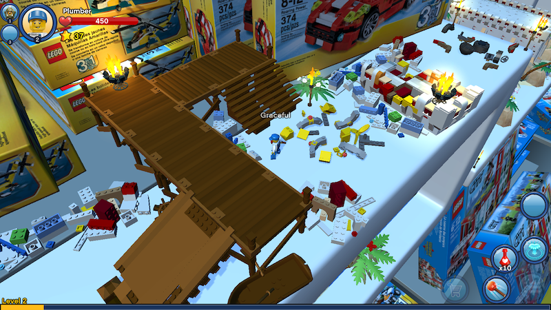
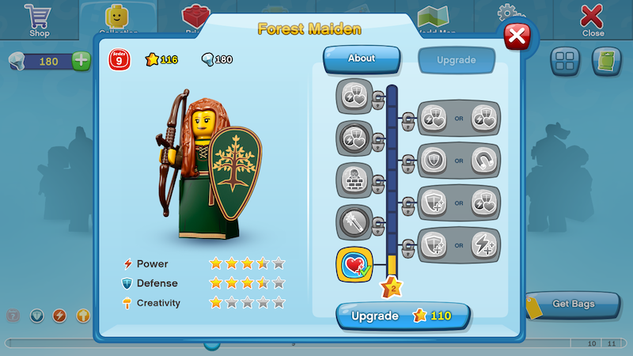
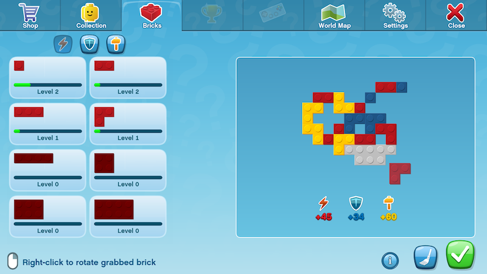
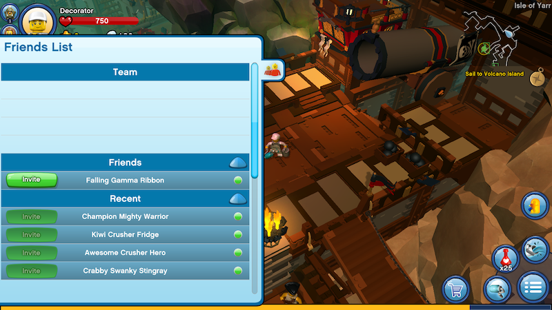
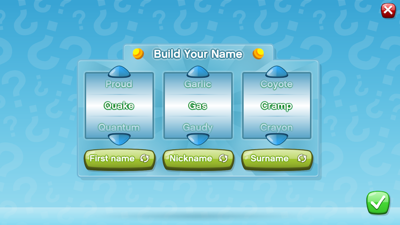
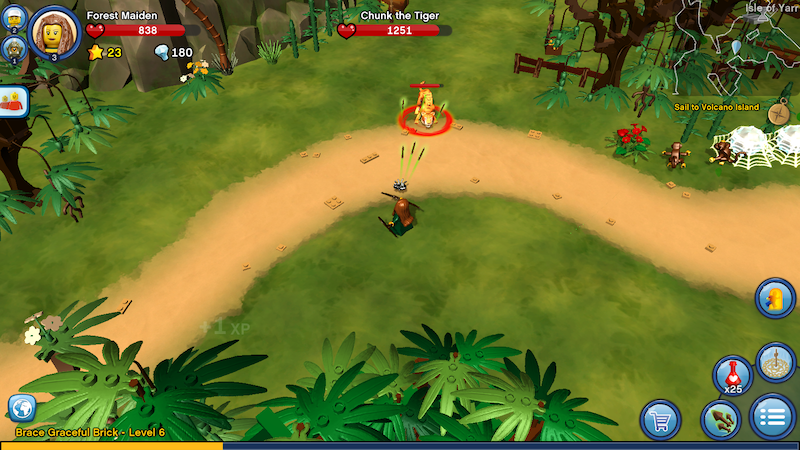
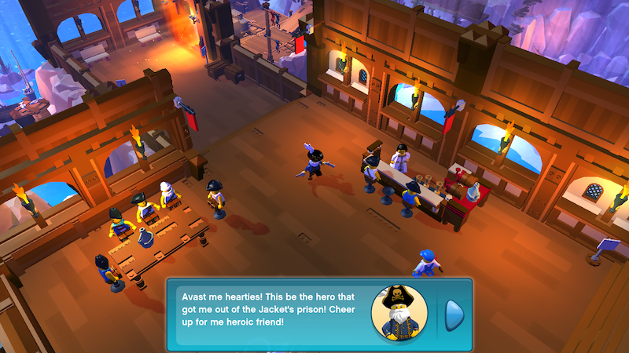
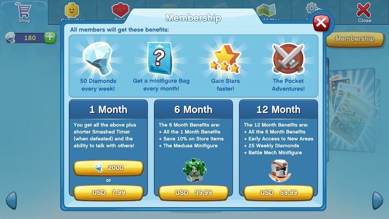
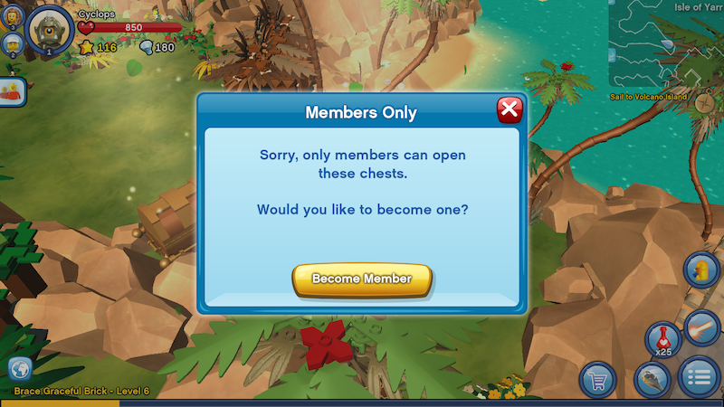

LEGO Minifigures Online Review
Built in a partnership between LEGO and Funcom, Minifigures Online is a MOBA-styled MMO featuring characters from the Collectible Minifigures line.
Keep in mind that this review was written while the game was in Open Beta.

Characters
Your perspective is from the top down. You control a team of three Minifigures, but only one at a time.
They all share the same location, but each has a separate health bar.
You do not create Minifigures. Instead, you play as ones based on their real-life counterparts sold in stores.
Minifigures specialize in one of three roles: Attacking, Defending and Building.
Minifigures are upgraded using Stars and Bricks.

Stars are the most plentiful thing you can collect from smashing objects and fighting enemies.
They can unlock upgrades ranging from extra health to special abilities.

Bricks are used to fill in a unique mosaic.
Each color gives you points towards Attacking (Red), Defending (Blue) and Building (Yellow).
Social
You have a list of acquaintances, and can form teams.

You do not type out your character's name. Instead, your character's name consists of three words you've selected.

Building
There are two types of building: automatic building as done in LEGO Star Wars, and the mosaic thing I've showed you.
What differentiates Builders from other Minifigures is the speed at which they can automatically assemble models.
And, that's about it.
Combat
Every Minifigure has a main attack (left click) and a secondary attack (right click), which is more powerful than the main attack but can be used less often.

When a Minifigure loses all of their health, it takes 20 minutes for them to be rebuilt.
Fortunately, you can use the rest of your available Minifigures.
Unlike LEGO Chima Online, enemies are much more diverse.
Missions
There are Missions, complete with Dialog. Like LEGO Chima Online, you accept the main series of missions automatically.
Unlike LEGO Chima Online, there are no voice-overs for mission-giver dialog. Just this goofy sound, repeated over and over for every letter.

Speaking of dialog: your Minifigures actually have dialog in some form.
However, they do not actually speak with the NPCs. They mutter gibberish every now and then.
Worlds
There are different zones, referred to as worlds.
However, each world must be unlocked in a specific order: Pirate World, Castle World, Space World, and Mythological World.
There are also zones within zones, AKA "dungeons" or "instances", scattered throughout the worlds.
Payment Model
This is your usual free-to-play game with monthly subscription on the side.
Like LEGO Chima Online, the currency you can buy with real money can also be collected in the game for free.
This currency is called "Diamonds."

It is possible to obtain a month of membership for free, but you of course must collect a lot of Diamonds in-game.

Special chests and special "dungeons" are only accessible to paying Members.
Final Thoughts:
If you're a child or a casual gamer, you might like this.
If you're a serious LEGO fan, you might enjoy looking at the virtual LEGO environments.
That is all.